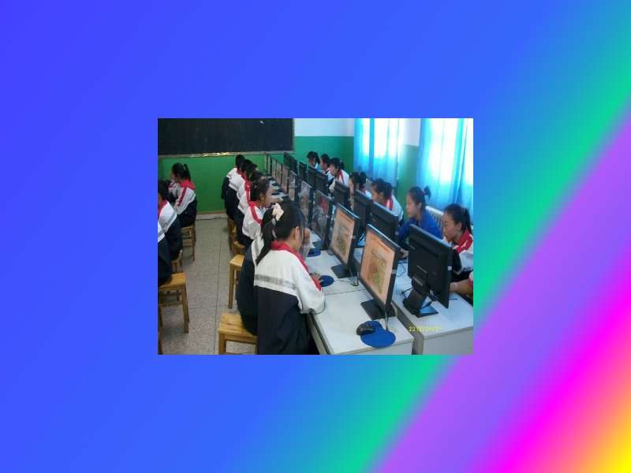

2011-2012 第二学期八年级图像处理教学设计
作者：TeliuTe 来源：基础教程网
十五、学会缩放图层和图像 返回目录 下一课
（一）教学设计
1、学习目标：学会缩放图层和图像
2、注意事项：图层和图像的概念区分开
3、教学过程：
1）教师准备学案和板书；
2）学生整队进入，开机抄黑板上笔记；
3）教师讲解板书演示操作；
4）学生打指法、日志、完成操作；
5）教师打勾记录学生指法成绩，检查日志和操作；
注：学生抄完笔记就开始打指法、日志，老师讲完后再继续完成；
（二）板书设计(学生笔记)
第15课 学会缩放图像和画布
1、下载一张大图片（右键－图片信息）
2、进入 gimp 点文件、打开
3、点图像、缩放图像 400×300
4、再点图像、画布大小、800×600、居中，
新建图层、填充
5、另存两次 xcf jpg，上传
操作图示：

（三）课后记 2012-04-16 17:18
上午调来一节7年级的，结果上一半停电
回班里接着做测验，用上次8年级的稍作修改
--
下午8年级的，学生先进来了
光知道玩，结果讲的时候听不懂了
--
做起来才发现绕不过弯来，想着简单做着步骤多
耐心重新讲，又担心惯成毛病下次还不认真听
--
另一个班最后一节，也是毛毛糙糙的
有些怪了这个班，说不上来的感觉
--
另一个以说要去排练课本剧，一口否决
然后气鼓鼓的做练习，做完让去又不去了
--
原来要好多人，这些老师又出招让学生来请假
瞎折腾不知道有什么意义，弄得全校都在搞这个
--
返回目录 下一课
本教程由86团学校TeliuTe制作|著作权所有
基础教程网：http://teliute.org/
美丽的校园……
转载和引用本站内容，请保留版权信息和本站链接。